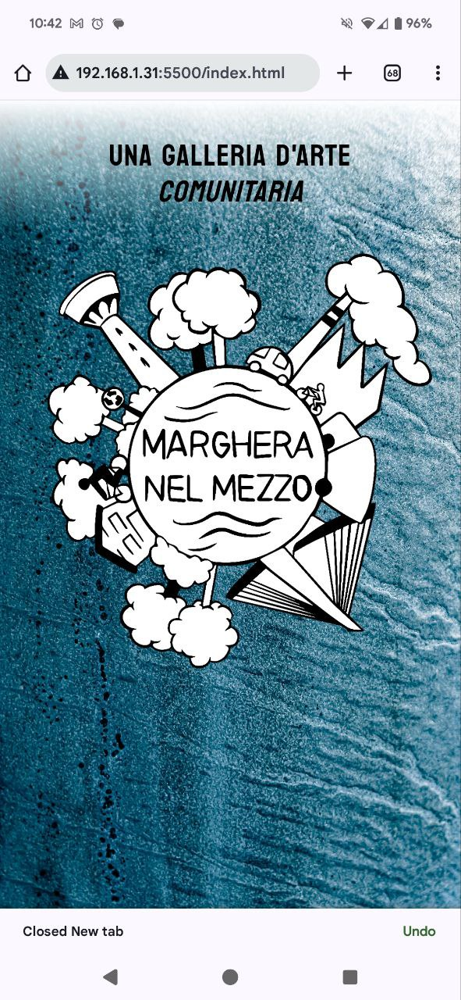
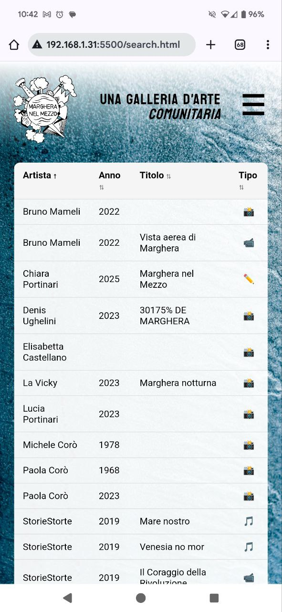
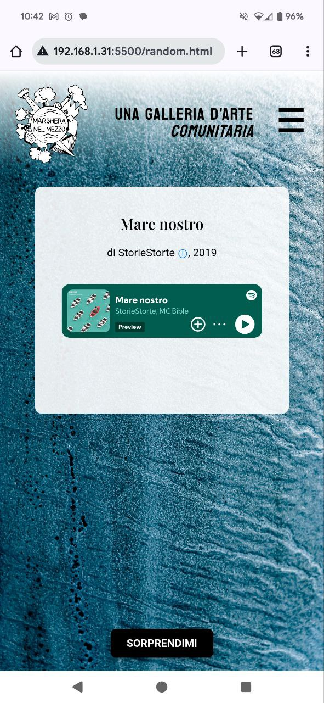
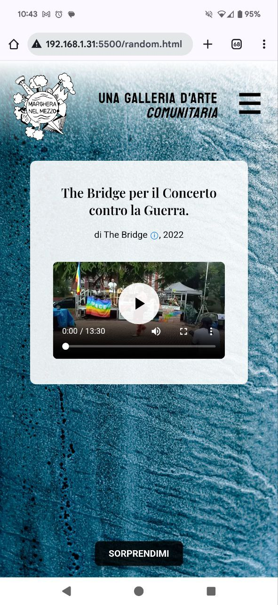
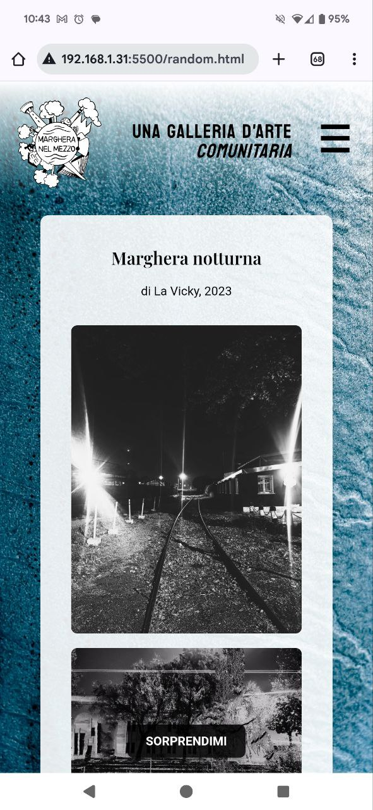
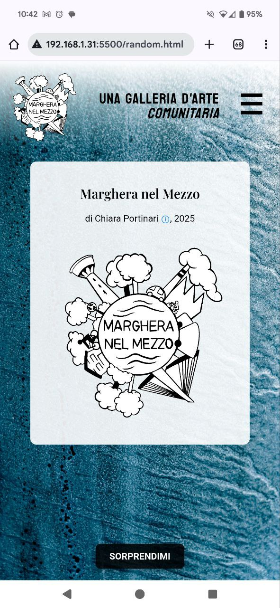

Photo by Bruno Mameli, 2023.
Marghera nel Mezzo is a participatory research and co-design project aimed at exploring, telling, and enhancing the social, cultural, and urban identity of the area of Marghera, suburb of Venice.
Through an open and collective process, the project actively involves residents, artists, researchers, and local organizations in a journey of listening, gathering memories, and shared imagination.






The initiative was structured around a series of participatory activities — interviews, exploratory walks, collective mappings — aimed at bringing to light the stories, experiences, aspirations, and challenges that shape Marghera today.
The process resulted in the creation of a community art gallery, where visitors can not only view works created by local residents, but also contribute to the shared archive with their own. The gallery includes photographs, videos, audio, texts, and illustrations that represent the neighborhood through the eyes of those who live it, offering a space for expression, reflection, and dialogue.